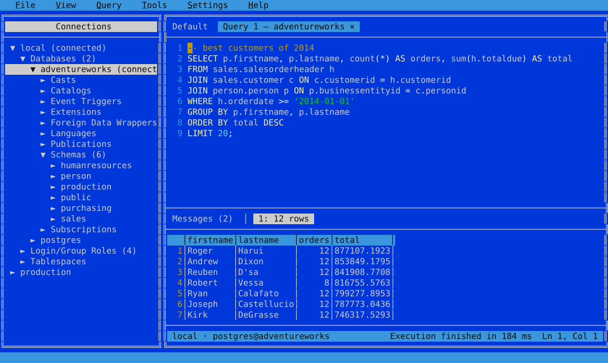
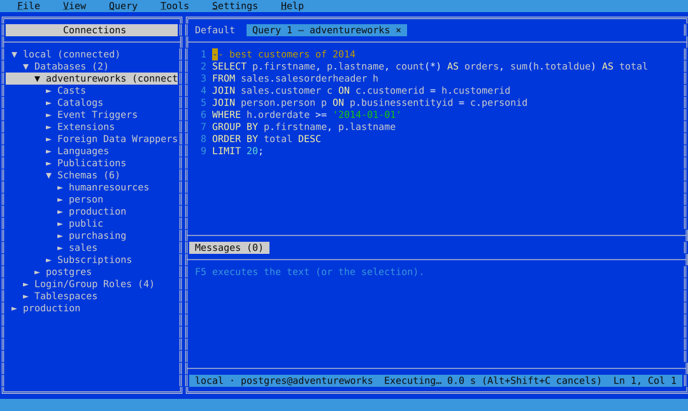
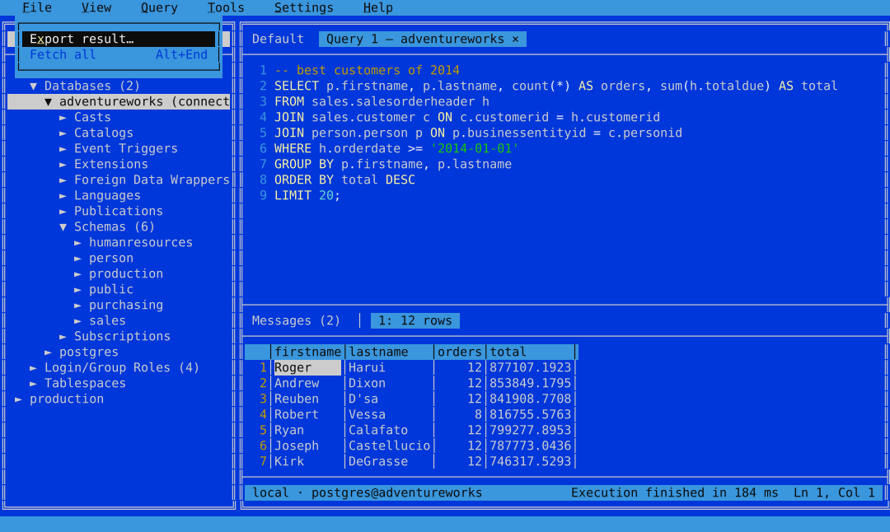
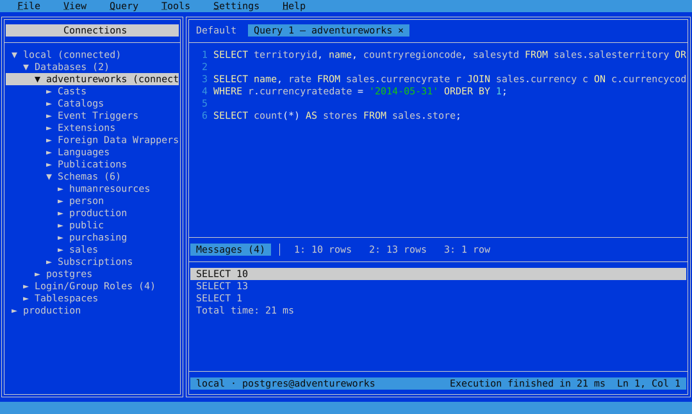
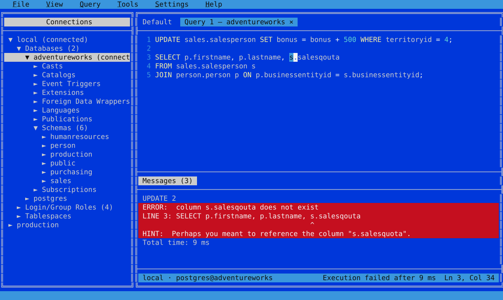
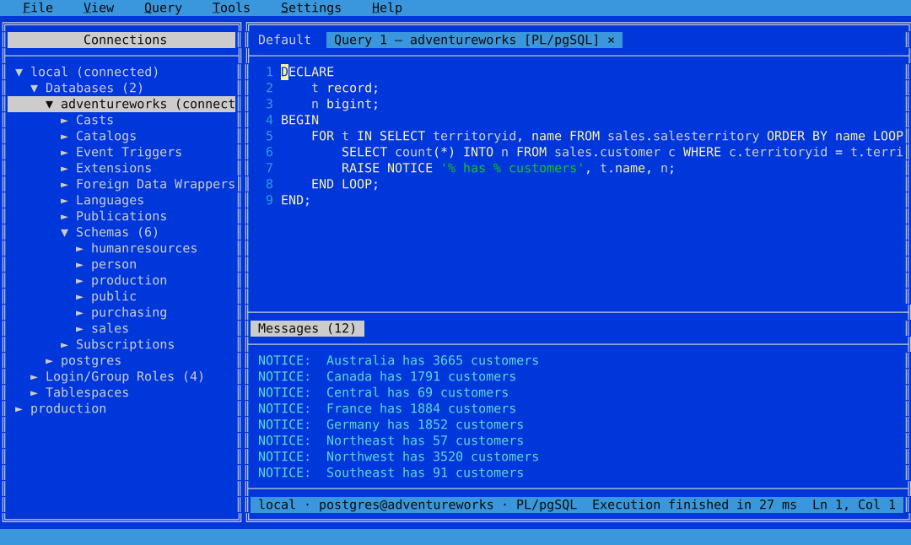
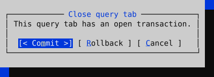

Query tabs
Where you write and run SQL: executing, results, messages and errors, cancelling, transactions, PL/pgSQL mode, and what happens when a tab closes.

Opening a query tab
A query tab always belongs to one database. You choose it in the tree:
- Put the tree cursor on a database, or on anything inside it (a schema, a table, a column…).
- Press Ctrl+N — from any part of the window. Or: , or in the context menu (F2).
The tab is named Query 1 – adventureworks, opens its own connection to that database, and the cursor is in the editor. Messages shows Connecting… and then Connected to ….
- With the cursor on a server row or on Login/Group Roles / Tablespaces there is no database: Ctrl+N only shows a hint in the status line.
- Open as many query tabs as you like, also several for the same database — each has its own connection, transaction and session settings.
- Other ways to get a query tab: Ctrl+B on a table (first 100 rows), Ctrl+E on an object (its definition), (a file).
The parts of a query tab
| Part | What it shows |
|---|---|
| File bar | Only when the tab has a file: its full path, with * while there are unsaved changes. |
| Editor | Your SQL. See SQL editor and autocomplete. |
| Results bar | Messages (n), then one label per result set: 1: 12 rows, 2: 1,000+ rows. |
| Results | The grid of the chosen result set, or the messages. |
| Tab status row | Left: the connection (local · postgres@adventureworks), the transaction state, PL/pgSQL when that mode is on. Then what is happening. Right: the cursor position. |
| Key | What it does |
|---|---|
| Alt+Down / Alt+Up | From the editor to the results, and back. |
| Ctrl+R | Hides the results (the editor gets the whole tab) or shows them again. |
| Alt+Shift+Up / Alt+Shift+Down | Makes the results smaller / larger. With the mouse: drag the line above the results bar. |
| F6 | To the object tree and back. |
Executing: F5
F5 (or ) runs
- the selected text, if something is selected;
- otherwise the whole text of the editor.

To run one statement of a script: put the cursor at its start, press Shift+End (or Shift+Down for several lines) to select it, then F5.
While the statement runs, the tab status row shows Executing… with the elapsed time and the key that cancels:

You do not have to wait: switch to another tab, browse the tree, run something in a second query tab. Rows are shown as soon as they arrive. When the run ends, the status row says Execution finished in … or Execution failed after ….
Scripts: several statements at once
The text is sent to the server as one request, exactly as pgAdmin does. PostgreSQL then treats a script of several statements as one transaction:
- if one statement fails, the statements before it are rolled back too, and the ones after it do not run;
- statements that cannot run inside a transaction —
VACUUM,CREATE DATABASE,CREATE INDEX CONCURRENTLY,ALTER SYSTEM— fail when they are part of a script. Run them alone: select just that statement and press F5; - a script that contains its own
BEGIN/COMMITcontrols its transactions itself.
Each statement that returns rows gives its own result set; each statement leaves its command tag in Messages.
Results
The results bar

SELECTs: three result sets. The second one is shown.Messages (n) is always the first label. After it comes one label for each result set, with its number
and row count. The label that is shown is highlighted.
| Key | What it does |
|---|---|
| Ctrl+PgDn / Ctrl+PgUp | Next / previous result set — also from the editor. Second keys: Alt+PgDn / Alt+PgUp. |
| Alt+M | Switches between the result set and Messages — also from the editor. |
| Alt+Right / Alt+Left | In the results: through all labels in a circle, 1 → 2 → … → Messages → 1. |
| click | A label shows that result set. |
After every run the first result set is shown. A run that returns no rows at all (an UPDATE, DDL,
a DO block) ends on Messages; a SELECT that finds nothing shows its empty grid with the
column names.
The grid
Move into the grid with Alt+Down. It has a cell cursor.
| Key | What it does |
|---|---|
| Arrows | Move the cell cursor; the grid scrolls sideways for wide results. |
| PgUp / PgDn | A page up / down. |
| Home / End | First / last column of the row. |
| Ctrl+Home / Ctrl+End | First / last loaded row. |
| Ctrl+C or Ctrl+Insert | Copies the value of the cell — the whole value, also when the grid shows it shortened. |
| Ctrl+A, then Ctrl+C | Copies the whole result set: tab-separated, with a header row — ready to paste into a spreadsheet. |
| Alt+End | Fetch all rows (see below). |
| F2 | Context menu: Export result…, Fetch all. |
How values are shown:
- The first column is the row number.
[null], in a quiet colour, is a NULL — different from an empty text.- Numbers are right-aligned, everything else left-aligned.
- A column is as wide as its name and the values loaded so far, but at most 40 characters; a longer value ends
with
…. - A line break inside a value is shown as
↵, a tab as→. Copying gives the real characters.

Large results: 1,000 rows at a time

1,000+ rows, the status row
1,000 rows loaded – more available.pgtc does not read a million rows just because you forgot a LIMIT. It takes the first
1,000 rows (the batch; the number is a setting), shows them, and stops
reading. The server waits.
- When you scroll near the end of the loaded rows, the next 1,000 are fetched by themselves.
- Alt+End — — reads all the rest.
- The label shows
1,000+for as long as there are more rows.
A paused result is a query that is still running on the server. It keeps its snapshot and its locks until it ends. It ends when you fetch all rows, cancel it (Alt+Shift+C), run the next statement in the tab, or close the tab. Do not leave a paused result open for hours on a busy database.
While a result is paused, the tab's connection is busy. Things that need it — autocomplete reading new names, F7 templates, the generate commands of F4 — tell you to finish or close the result first.
What “closing” a paused result does. When you run the next statement (or commit, or roll back) while a result is paused, pgtc must end the old query first:
- if nothing can be lost — no transaction was open and the result belongs to the first statement of the run — the query is simply cancelled;
- otherwise the remaining rows are read and thrown away, because cancelling would abort the transaction and undo what the script did before. The status row shows Closing the result…. For a very large result this takes as long as reading it; Alt+Shift+C then cancels for real (and, like any cancel, aborts the transaction).
Messages

Messages is the log of the tab's last run, in the order things happened:
| Line | Meaning |
|---|---|
UPDATE 2, INSERT 0 5, CREATE TABLE, SELECT 13 | The command tag of each completed statement — how many rows it changed or returned. |
NOTICE: …, WARNING: …, INFO: … | Messages of the server and of RAISE in your functions. They appear while the statement runs. |
ERROR: … | An error, with its DETAIL and HINT lines and the place in your text. |
BEGIN, ROLLBACK | What pgtc did by itself for the transaction settings of the tab. |
NOTIFY: channel "name" (pid 1234): payload | A notification from LISTEN / NOTIFY. It arrives whenever the server sends it, also between runs. |
Total time: 21 ms | The time of the whole run. |
The number in Messages (n) is the number of messages. Move in them with Up / Down.
| Key | What it does |
|---|---|
| Enter (or a double click) | On an error or notice with a known place: jumps to that line in the editor. |
| Ctrl+C | Copies the message under the cursor, with all its lines. |
| Ctrl+A, then Ctrl+C | Copies all messages. |
| F2 | Context menu: Jump to line, Copy message, Copy all messages. |
Errors

^, the
exact place.When a statement fails:
- Messages is shown automatically, and the bottom line of the window says Execution failed after … — see Messages;
- the error is followed — as in psql — by
LINE n:with the text of the line (n is the line number in your editor, also when you ran only a selection), and a^under the place of the error; DETAIL:andHINT:lines of the server follow;- the result sets of statements that had already finished stay available in the results bar — but remember that a failed script is rolled back as a whole.
Put the cursor on the error and press Enter: the focus moves to the editor, onto the place of the error, and the word there is selected — type the correction and press F5 again.

s.salesqouta is selected in the editor.This also works for errors inside a DO block and in PL/pgSQL mode: pgtc works out the line of
your text from the server's CONTEXT. The place is the one at the time of the error; if you edit the text
afterwards, a jump may be a little off.

Cancelling a query
Alt+Shift+C — — asks the server to stop the running statement. This is PostgreSQL's real cancel request, the same as Ctrl+C in psql: the statement ends with the error canceling statement due to user request, and its transaction is aborted.
- The same key ends a paused result and stops a running export.
- Sometimes a server does not react — for example while it waits for the network. If nothing has happened after 5 seconds (a setting), pgtc asks: The server did not react to the cancel request. Close this query tab's connection? — Close connection ends the query for certain (an open transaction is lost); Keep waiting waits on. Only this tab is affected. It keeps its text, and the next F5 connects it again.
Transactions
Each query tab has two switches, in the menu (an [x] shows that a switch
is on):
| Switch | Default | On | Off |
|---|---|---|---|
| Auto commit | on | Every run is committed when it ends without an error. This is how psql behaves. | pgtc starts a transaction with your first statement and leaves it open. Nothing is permanent until you choose . |
| Auto rollback on error | off | When a statement fails inside an open transaction, pgtc rolls the transaction back at once. | The transaction stays in the failed state until you roll it back yourself. Until then every statement is refused by the server. |
The switches of a new tab come from Settings; each tab then keeps its own.
Working with auto commit off

BEGIN pgtc sent; the tab is marked
(tx) and its status row says Transaction open.- Turn off .
- Run your changes. Look at the result — run a
SELECTin the same tab to check it. - Choose to keep the changes, or to undo them.
The state of the tab's transaction is always visible:
| Tab label | Status row | Meaning |
|---|---|---|
| No transaction is open. | ||
(tx) | Transaction open | Changes are waiting for Commit or Rollback. Rows you changed are locked for others. |
| Transaction failed – rollback | A statement failed inside the transaction. Choose . |
Commit, Rollback and the two switches have no key of their own; they are in the
menu (F9, then Alt+Q). You can give them keys in
keymap.toml. Writing COMMIT; or ROLLBACK; in the
editor and running it works just as well.
An open transaction holds its locks and keeps old row versions from being cleaned up. The
dashboard shows such sessions as idle in transaction. Do not go to lunch with
(tx) on a tab of a production database.
PL/pgSQL mode
Normally the editor holds SQL. In PL/pgSQL mode it holds procedural code — variables, IF, loops,
RAISE — that you can run directly, without creating a function. It is PostgreSQL's answer to running a
T-SQL batch in SQL Server Management Studio.
- Press Ctrl+P in the query tab (or ). The tab label gets
[PL/pgSQL], the status row PL/pgSQL. - Write the block: an optional
DECLAREpart andBEGIN … END;. If you write only statements, pgtc addsBEGINandENDfor you. - Press F5.

RAISE NOTICE is a line in Messages.pgtc runs the text as an anonymous block: DO $pgc$ … $pgc$;. That means:
- nothing is created on the server and you need no
CREATEprivilege; RAISE NOTICEis your “print”: its output appears in Messages while the block runs;- errors and notices jump to the right line of your text with Enter, as in SQL mode;
- a block cannot return rows. To look at data,
RAISE NOTICEit, or write the rows into a temporary table and select from it in SQL mode; - the text must not contain
$pgc$.
Ctrl+P again switches back to SQL mode. The mode belongs to the tab; other tabs are not affected.
The commands gtc and gtsi of the F4 command line write
PL/pgSQL skeletons for a table.
Closing a query tab and quitting
Ctrl+W, a click on the tab's ×, or closes the
tab. Two things can be lost, so pgtc asks about each:


| Question | Answers |
|---|---|
| … has unsaved changes. Save them? | Yes saves to the tab's file, or asks for a file name if it has none; the tab closes only when the file was written. No discards the text. Cancel keeps the tab open. |
| This query tab has an open transaction. | Commit commits and then closes. Rollback closes; the server rolls the transaction back. Cancel keeps the tab open. |
- The first question can be turned off: , Ask to save query tabs when closing. Unsaved text is then discarded without a question.
- A statement that is still running is cancelled when its tab closes.
- Quitting (F10) asks the first question for each query tab with unsaved text, one tab at a time — you see the tab it asks about — and then one question for all open transactions: Commit all / Rollback all / Cancel. Cancel at any point stops quitting.
- Disconnecting a server closes its query tabs with the same questions.
Good to know
- Lost connection. If a tab's connection is lost, the tab keeps its text and says not connected; the next F5 connects again. If the tab no longer knows its database, it asks you to select one in the tree.
COPY … FROM STDIN/TO STDOUT— copying to or from the client — is not supported yet; the server's error is shown.COPYto or from a file on the server works, as does exporting a result.- psql's backslash commands inside a script are not understood. The everyday ones are available on F4 — see psql-style commands.
- Session settings (
SET search_path …,SET ROLE …) belong to the tab's connection and stay until the tab closes.